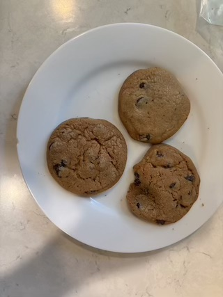

I took this photo and you cannot use it without permission
I picked this recipe because my Memaw makes these cookies whenever we visit her, these are definitely the highlight of the trip. She even makes extra so we can bring them home and eat them.
Ingredients, baking process and more
| Ingredient | Amount |
|---|---|
| Flour | 2 1/4 cups |
| Baking Soda | 1 teaspoom |
| Butter | 1 cup |
| Granulated white sugar | 3/4 cups |
| Brown sugar | 3/4 cups |
| Vanilla | 1 1/2 teaspoons |
| Eggs | 2 |
| 12oz bag of Nestle Choc Chips | 3/4 of the bag |
- Combine flour, baking soda and salt in small bowl then set aside
- Beat softened butter, granulated sugar, brown sugar and vanilla in large mixing bowl.
- Add eggs one at a time, beating well after each addition; gradually beat in flour mixture.
- Take dough out and put into a bowl
- Measure dough clumps by a rounded tablespoon and put the dough clump onto ugreased baking sheets
- Bake in preheated 375 degree oven for 9-11 minutes or until golden brown.
- Let stand for 2 minutes
This makes about 4-5 dozen cookies, freeze them to store as needed.
Meemaws tips
- Refrigerate the dough about an hour or so before cooking so that the cookies are fuller
- Add walnuts to recipe for extra flavor and crunch
- Always eat warm to get the best satisfaction
- Don't use big chocolate chip chunks, its to sugary and makes the cookies less authentic